The Ravilo TV layout only, 960 × 540 dp, drawn at Content size COMPACT because that is what prod is set to. Three things to decide: the Slim geometry, and whether idea A and idea B come with it.
design/ravilo/ravilo.css's .appbar is 92 px (46 dp) and drifted from
the shipped 60 dp years ago. Drawing Standard from it would have made this round's own
baseline wrong by 14 dp.The bar drops from 60 dp to 48 dp and every part in it is resized in proportion. The 12 dp it
saves goes straight back to the content, because everything that offsets by the bar reads
RaviloDimens.appBarHeight rather than a literal.
Drawn so the 44-vs-48 decision can be made on a picture. It works, and it is 4 dp tighter than I would ship — see "What decides 44 vs 48" below.
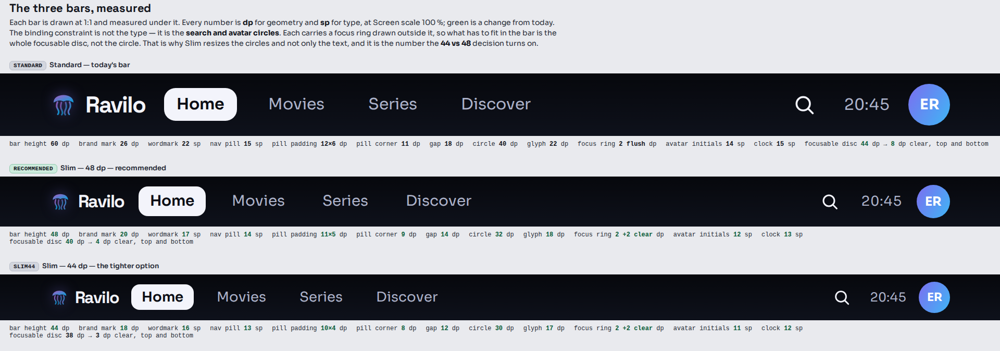
| Part | Standard (today) | Slim 48 REC | Slim 44 |
|---|---|---|---|
| Bar height | 60 dp | 48 dp | 44 dp |
| Brand mark | 26 dp | 20 dp | 18 dp |
| Wordmark | 22 sp / −1 sp | 17 sp / −0.8 sp | 16 sp / −0.8 sp |
| Brand gap | 8 dp | 7 dp | 6 dp |
| Nav pill type | 15 sp | 14 sp | 13 sp |
| Nav pill padding | 12 × 6 dp | 11 × 5 dp | 10 × 4 dp |
| Nav pill corner | 11 dp | 9 dp | 8 dp |
| Row gap (all top-level items) | 18 dp | 14 dp | 12 dp |
| Search / avatar circle | 40 dp | 32 dp | 30 dp |
| Search glyph | 22 dp | 18 dp | 17 dp |
| Focus ring | 2 dp, flush | 2 dp, 2 dp clear | 2 dp, 2 dp clear |
| Avatar initials | 14 sp | 12 sp | 11 sp |
| Clock | 15 sp | 13 sp | 12 sp |
| Side gutter | 48 dp | 48 dp | 48 dp |
The side gutter does not change. It is overscan safety, not height, and R205/R250 bought it the hard way.
Not the type — the circles. Search and the avatar each carry a focus ring drawn outside them, so what has to fit between the bar's edges is the whole focusable disc:
| Circle | Ring + clearance | Focusable disc | Clear above and below | |
|---|---|---|---|---|
| Standard 60 | 40 dp | 2 + 0 | 44 dp | 8 dp |
| Slim 48 | 32 dp | 2 + 2 | 40 dp | 4 dp |
| Slim 44 | 30 dp | 2 + 2 | 38 dp | 3 dp |
At 48 dp the ring has 4 dp of page either side of it. At 44 it has 3, and at 85 % screen scale that 3 dp is 2.55 dp of real screen — a ring that close to a solid bar's edge stops reading as a ring. 48.
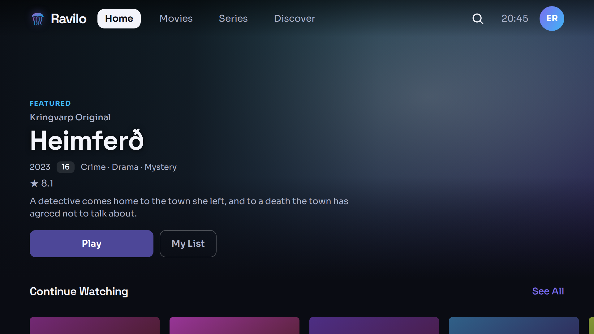
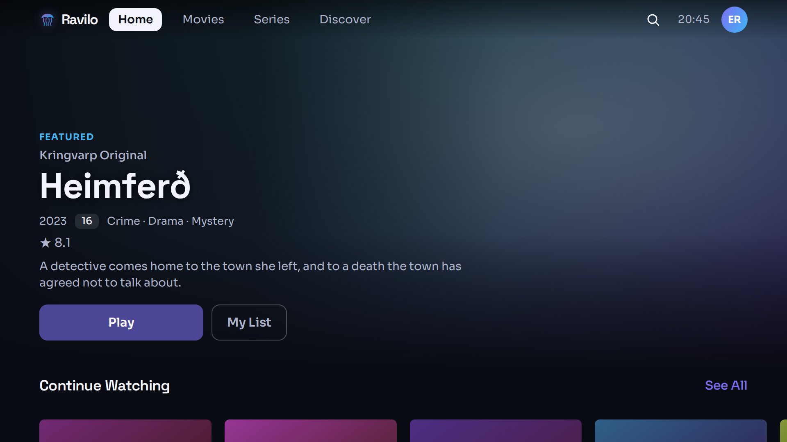
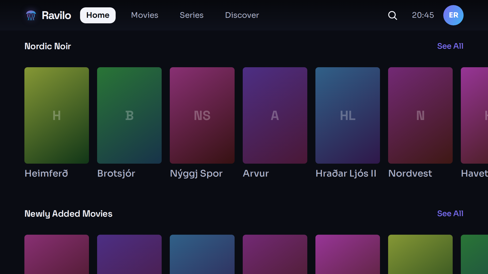
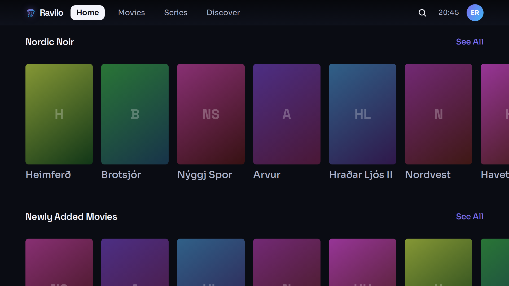
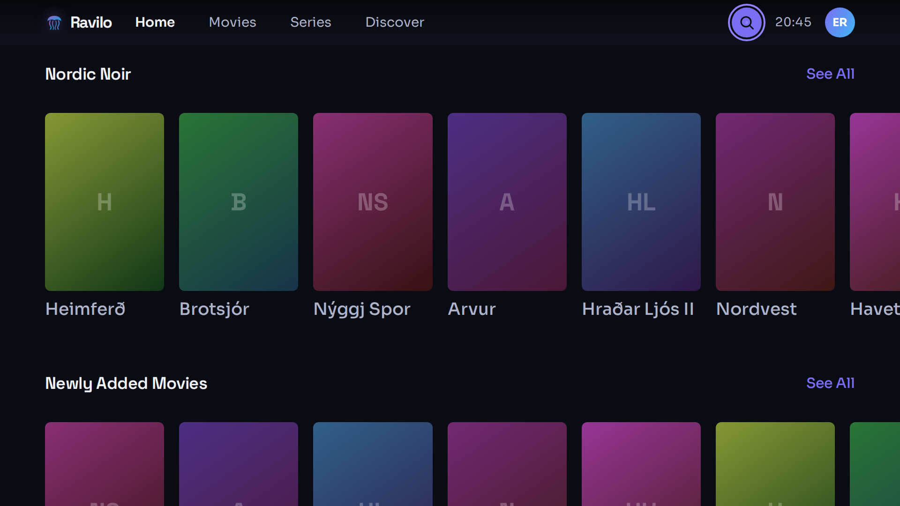
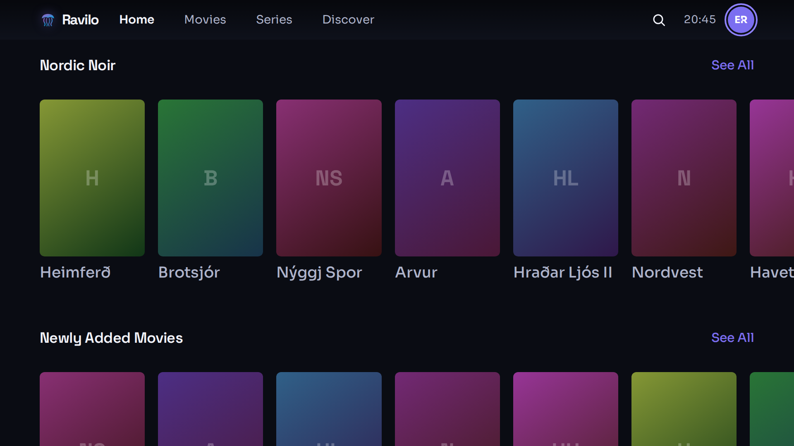
--ring #8e82ff on --accent
#7b6ef0 is a 4 % difference — at 1× it reads as a slightly darker hairline and at three
metres it does not read at all. Holding it 2 dp clear of the fill makes it a ring, and it is the
treatment RaviloButton already uses (focusRing(…, outset = 5.dp)). This is
a pre-existing defect in the Standard bar, not something Slim causes; Standard is drawn above
exactly as it ships so the two can be compared.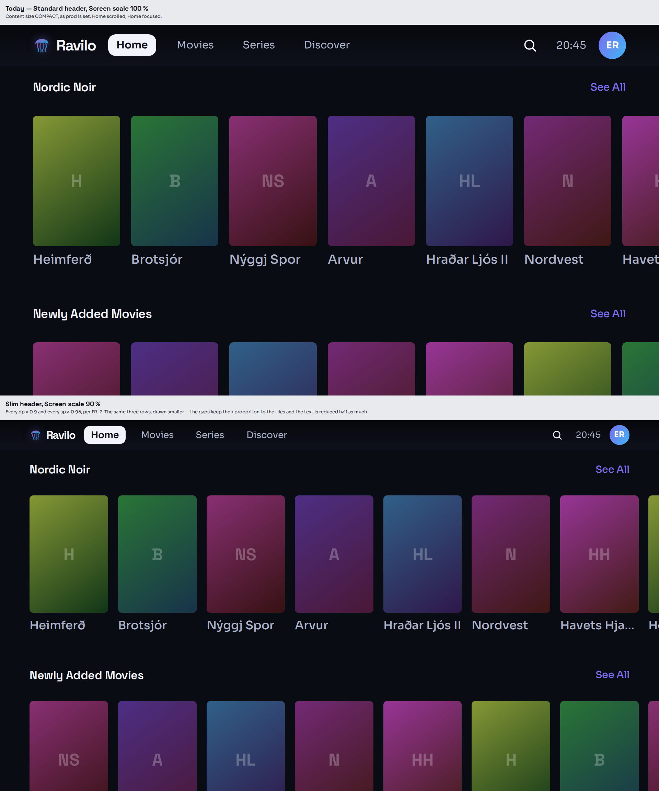
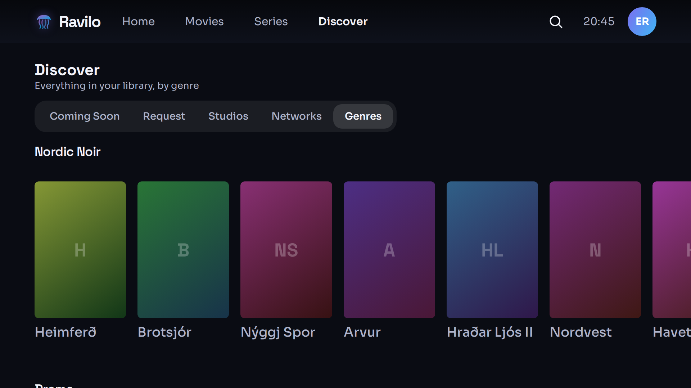
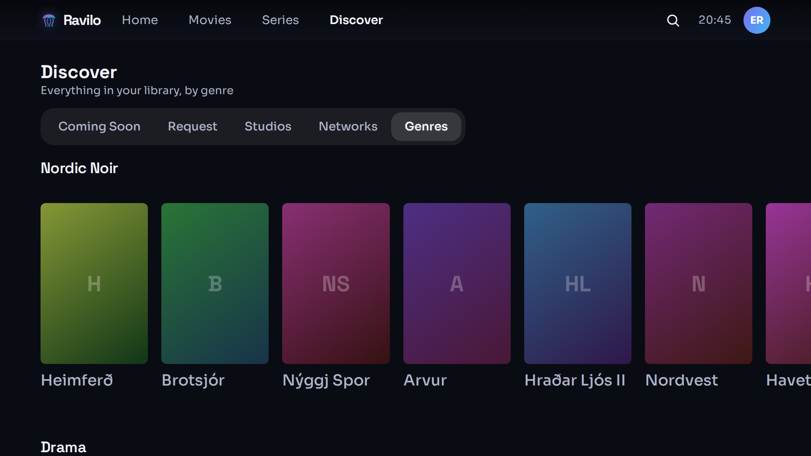
I would not tighten the title block. The brief's lean was to leave it and ask; having drawn
it, leaving it is right. Discover already starts at
appBarHeight + 24 dp, so Slim moves the whole block up 12 dp on its own. Taking more
out of the 24 dp gap would close the page's one piece of breathing room at the very moment the bar
above it got quieter, and the title at 22 sp over a 13 sp subtitle is the page's only hierarchy.
An entry in the right cluster, beside search, that opens the detail page of a title the viewer has not watched. It sits in the right cluster deliberately: that is where the bar keeps its actions, so it cannot be mistaken for a fifth tab.
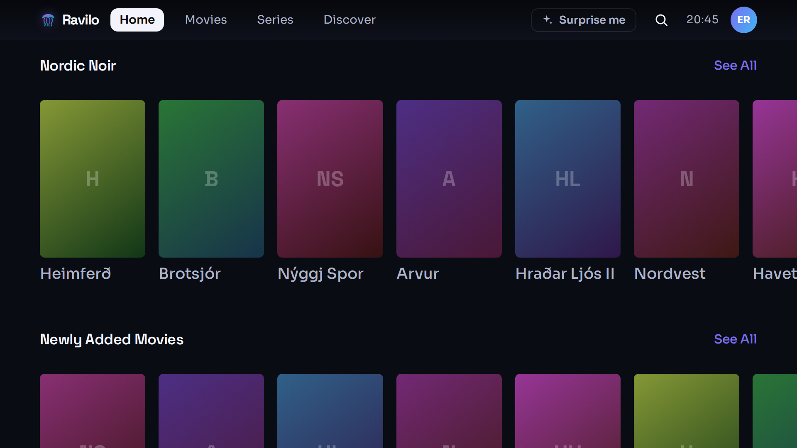
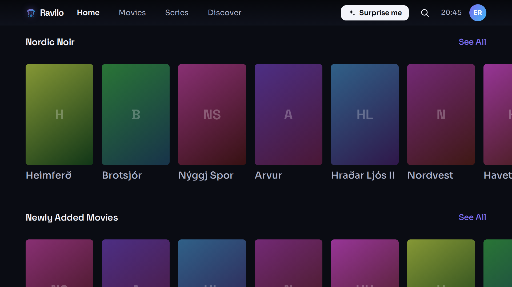
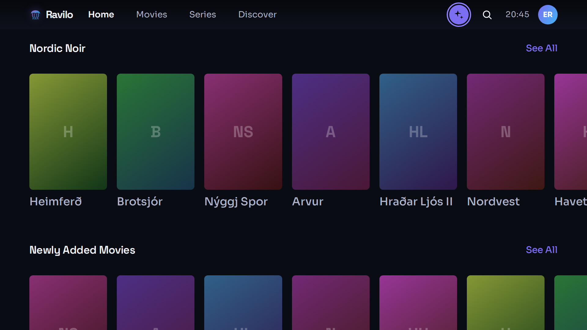
The glyph is a sparkle, not two crossing arrows. detail.shuffle / Blanda
already owns the shuffle glyph on a series page, and "play these in a random order" is a different
promise from "open one title". Reusing it would have been a real confusion.
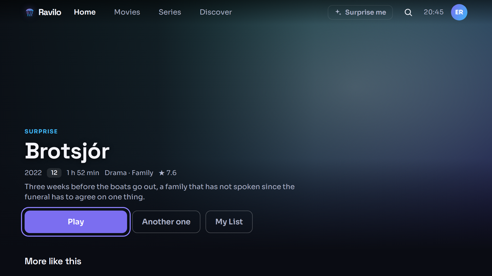
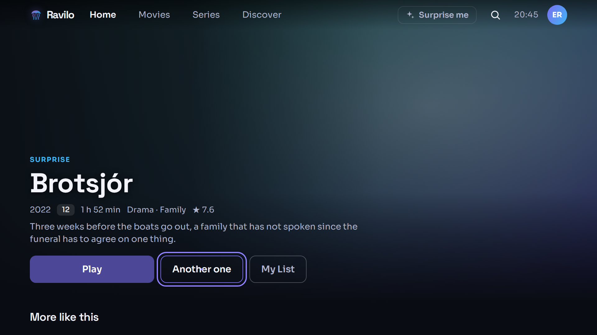
"Another one" is drawn at the shipped button size, not smaller. The brief said "a small
button"; a ghost button below heightIn(min = 44.dp) would break the actions row's
rhythm and put a D-pad target under the 10-foot rule. It is already the quiet one — ghost beside a
filled Play says "secondary" without shrinking.
A SURPRISE kicker replaces the usual tagline, so the page says why the viewer is looking at it. It is a new string; drop it and the page still works.
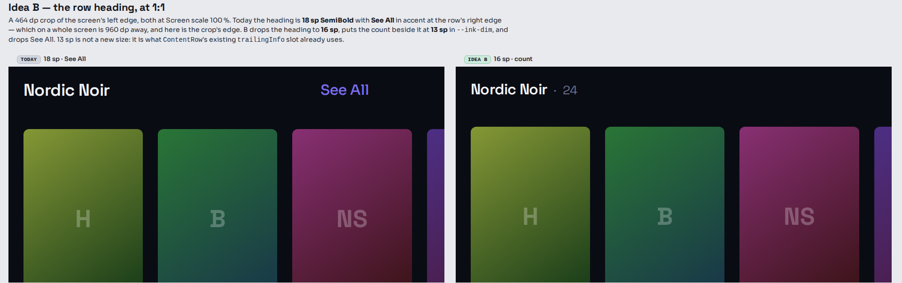
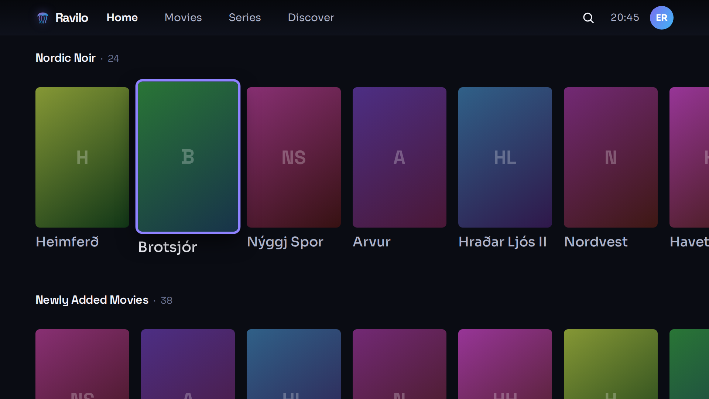
Two things worth knowing before this is adopted:
ContentRow already has a
trailingInfo slot at 13 sp in --ink-dim — it is simply
end-aligned today. B moves that same text next to the title.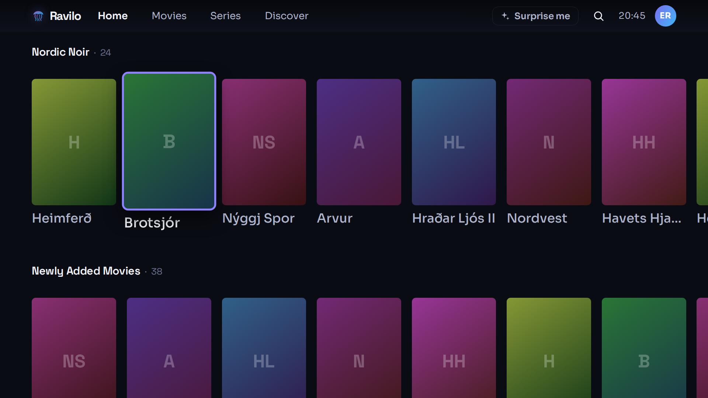
| State | Drawn |
|---|---|
| 10-foot focus, every focusable thing in the bar | Yes — nav pill, search, avatar, Surprise me, and a Discover chip |
| Danish and Faroese | Yes — slim48-home-scrolled-da, slim48-discover-fo |
| The longest string | Yes — Faroese Sjónvarpsrásir in the Discover chip bar; it fits with room |
| The TV skins | Yes — noir and midnight, beside the default aurora |
| Loading, empty, error, offline | No. The bar does not change in any of them — it draws the same four nav items whatever the page under it is doing |
| Phone, desktop, web, cast, Tizen | No. Out of scope: FR-3 applies the scale on a TV platform only, and the handset bar is a different AppBar branch |
| Key | English | Danish | Faroese |
|---|---|---|---|
| nav.surprise | Surprise me | Overrask mig | Yvirraska meg |
| detail.another | Another one | En mere | Eitt annað |
| detail.kicker_surprise | SURPRISE | OVERRASKELSE | YVIRRASKAN |
The Faroese is a draft and wants a native read — Vel eitt fyri mig ("pick one for me") may
be the more natural phrasing for the first of them. Every other string in every frame is the shipped
value from i18n/*.json.